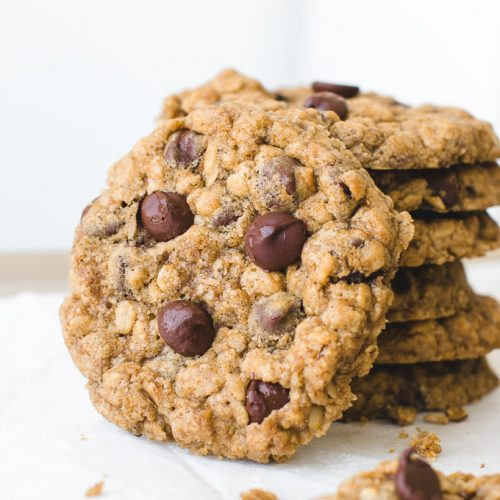

Mom's Oatmeal Chcolate-Chip Cookies

Mom's Delicious Mind Blowing Cookies
Mom's mind blowing cookies (weed free!)
will transform your world.
These cookies are best out of the
oven, or for the sadists out there;
fresh out of the freezer. With a quick
prep time of 15 minutes your
house will be filled with the scent
of nostaligic goodness in no time.
Ingreients
- 1 & 1/2 cups packed brown sugar
- 1 cup of butter
- 1 teaspoon vanilla
- 1 egg
- cups quick-cooking oats
- 1 & 1/2 cups flour
- 1 teaspoon baking soda
- 1/4 teaspoon salt
- 1 cup semi-sweet chocolate chips
- 1 cup chopped nuts (if desired)
Directions
- Preheat oven to 350f (bet you wish you read ahead)
- In large bowl, stir brown sugar and butter until
blended. Stir in vanilla and egg until light
and fluffy. stir in oats, flour, baking soda and salt;
stir in chocolate chips
- Onto ungreased cookie sheet,
dropp dough by rounded tablespoonfuls about
2 inches apart
- bake 10 to 12 ,inutes until golden brown
- After cooling slightly remove from pan